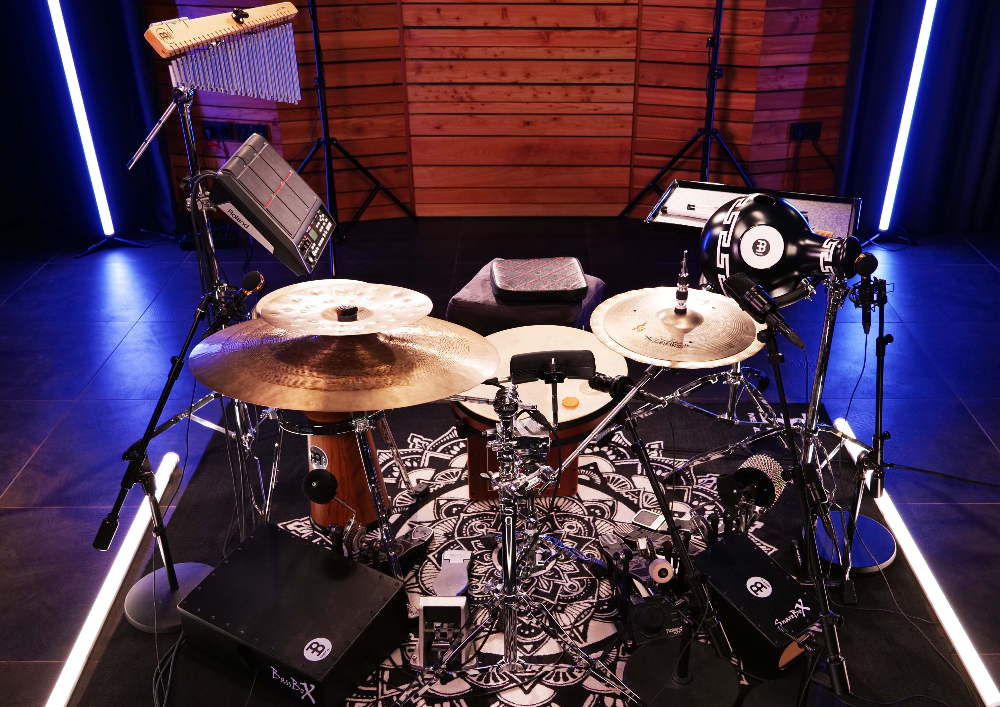

Hybrid Setup Lessons:
Teenagers and Advanced Students
Teenagers and advanced students benefit from Santino Scavelli's deep understanding of hybrid setups, developed at the Pop Academy and through direct learning relationships with musicians from various cultures. Students learn how to combine traditional rhythms with modern music styles. Santino shows them unique ways to use percussion and drums in band settings, creating a richer, culturally diverse musical experience.
Customized Lessons
The hybrid setup lessons with Santino Scavelli are tailored to each student's needs. Technical skills, musical interpretation, and creativity are the focus. Santino's comprehensive training and his ability to bridge different music cultures provide students with a unique and enriching learning experience.
Why Santino Scavelli?
Santino Scavelli brings a unique perspective to his teaching through his training at the Pop Academy and his Italian background, influenced by African, oriental, and European elements. His deep knowledge of hybrid setups, combined with practical experience and awards like the Meinl Outstanding Performance Award 2023, make him an exceptional teacher. He imparts both technical precision and cultural understanding, promoting independent play and the creative blending of musical traditions.
Experience the world of hybrid setups and be inspired by an experienced musician and teacher. Book your first lesson now and discover your passion for rhythm and music.

{kind=link}